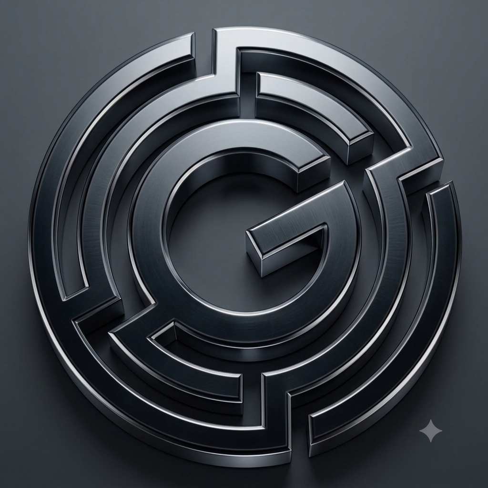

GOZMAC
Implementación avanzada de métricas, alertas y paneles interactivos en tiempo real para predecir incidencias de forma proactiva.
Gestión e incidentes críticos centralizados mediante flujos ITIL avanzados en entornos corporativos exigentes.